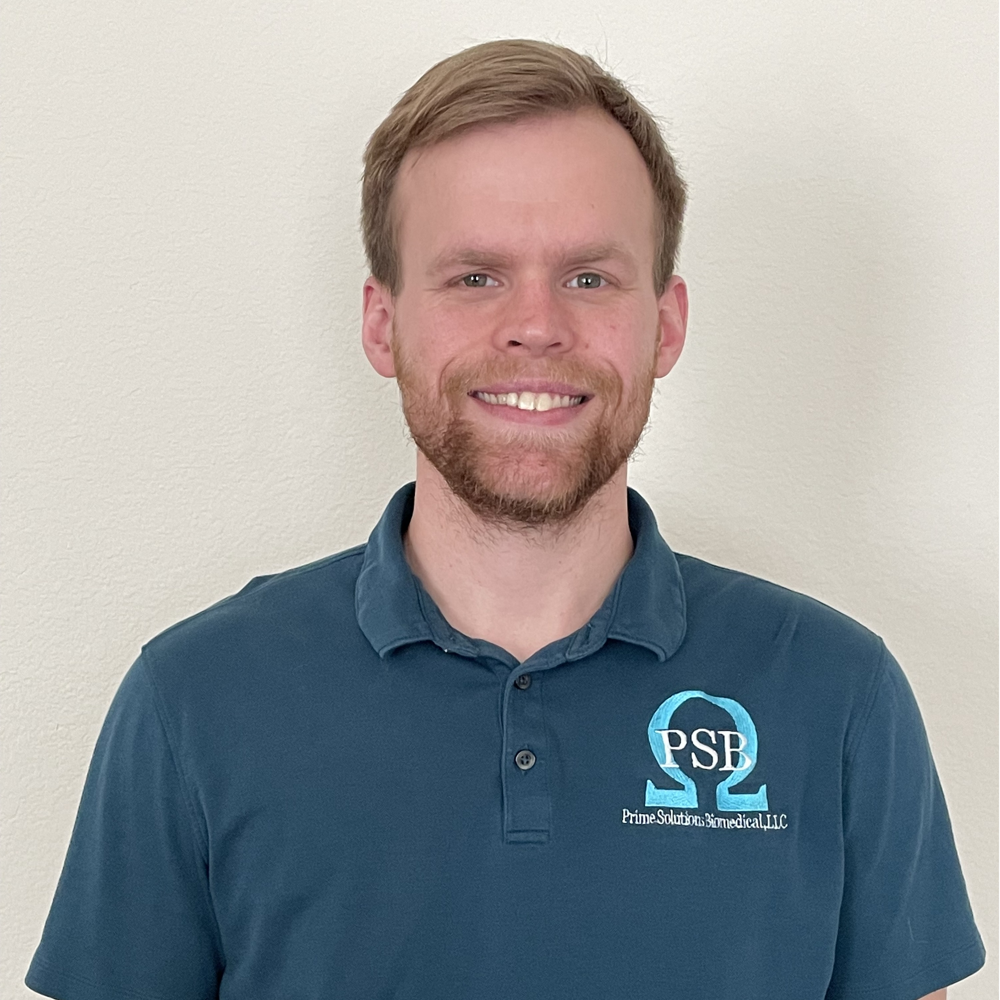

About
Prime Solutions Biomedical
Prime Solutions Biomedical is a 3rd party Biomedical company that was established in 2021.
We are based out of Fort Worth, Texas and are continually expanding our company’s reach
to accommodate our clients' needs.
We offer an ever-growing variety of services that you can
find listed here. Our goal is to have and keep your facility running up to regulation standards
and to keep your patients as safe as possible.
With a combined total of 40 years' experience in
the skills and services we offer, you can rest assured that we will work diligently to guarantee
your facility is presented as professional and well-prepared.
If your facility is in need of any
of our services, please reach out to us here.
Meet the Founder

My name is Jacob and I’m the founder of Prime Solutions Biomedical, LLC.
I have a loving wife, a dog named Thor, and I’m the proud father of a baby boy
that we welcomed into this world in 2021.
With over 8 years of working in the biomedical industry, I will assist you with
any questions or concerns you have about your medical devices or any other needs
that your facility has.